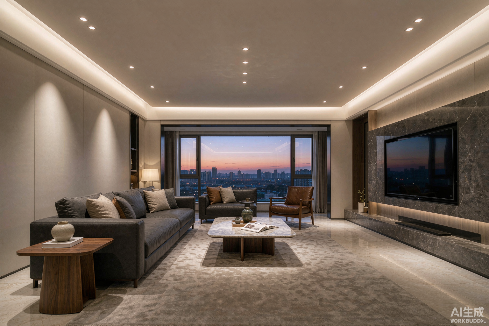
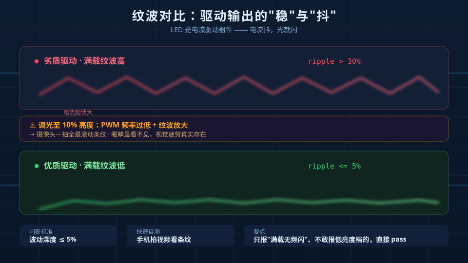
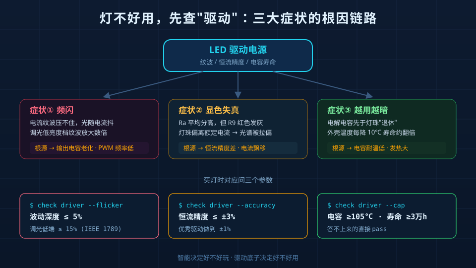

前阵子有个朋友跟我吐槽：花五百多买了盏智能台灯，App功能花里胡哨，能远程、能语音、能切场景。结果用了不到一个月，低亮度档位下频闪得厉害——拿手机摄像头对着灯拍视频，满屏水波纹；红色书本文字看起来发暗发灰，显色标称Ra90，实际颜色失真明显。
他问了我一句特别扎心的话："智能灯是不是都这样，光品质根本不重要？"
恰恰相反。频闪、显色差、用一年就变暗——这三个最常见的"灯不好用"投诉，病根几乎都不在灯珠，不在智能芯片，而在那颗最不起眼的LED驱动电源。今天把这三件事一次讲透，结尾给你3个能自己验证的参数。
症状一：频闪——"无频闪"可能是句空话
频闪的物理根源是驱动输出的电流纹波。LED是电流驱动器件，电流不稳，光就跟着抖。驱动里负责"熨平"纹波的主力是输出端的电解电容：电容老化、容量缩水，纹波压不住，频闪就出来了。
更隐蔽的是调光时的频闪。很多廉价驱动调光靠降低PWM占空比实现，PWM频率低于1250Hz时，高速摄像头一拍全是条纹；低频段纹波还常常比满载时大好几倍——这就是为什么不少灯"最亮时不闪，一调暗就闪"。

症状二：显色差——"Ra≥90"为什么看着还是不对
显色指数Ra是把"红橙黄绿青蓝紫"15个标准色样平均打分。平均分高不代表每个颜色都准，很多驱动为了省成本，让灯珠工作在非额定电流下，光谱被拉偏——Ra平均分能过90，但R9（正红色）可能只有50多，看红色系物体自然发灰发暗。
驱动在这里的角色是"喂对电流"：只有恒流精度高、输出稳定的驱动，才能让灯珠始终工作在芯片厂家设计的额定点上，光谱才不发飘。
症状三：一年就变暗——灯珠在"慢性自杀"
灯珠本身寿命动辄三五万小时，真正先走一步的往往是驱动里的电解电容。电解电容的寿命和温度强相关：外壳温度每降10℃，寿命大约翻一倍。劣质驱动发热大、电容用料差，两三千小时后容量明显衰减，输出电流跟着掉——表现就是"灯越来越暗"，还有人以为是灯珠坏了，其实是驱动在"供血不足"。
为什么"智能"救不了光品质
一个残酷的事实：智能是锦上添花，光品质才是底线。市场上不少"智能灯"的智能模块是外购的，App是贴牌的，唯独光品质没人认真做——因为参数表上写"App多好用"比写"纹波≤5%"容易得多，也唬人得多。
这跟买手机一个道理：系统再流畅，屏幕是块烂屏，天天看眼睛也遭罪。灯的"屏幕"就是光，而光的质量由驱动决定。
3个参数，买灯时直接问
别听销售背参数，问下面三个，答不上来的直接pass：
| 参数 | 问什么 | 及格线 | 为什么重要 |
|---|---|---|---|
| 波动深度 | 满载和10%亮度下的波动深度分别是多少？ | 满载≤5%，调光低端≤15% | 只报满载不报低亮度的，低亮度大概率闪 |
| 恒流精度 | 输出电流误差多少？ | ≤±3%（优秀≤±1%） | 精度差=灯珠偏离额定点=光谱漂移+光衰加速 |
| 电容与寿命 | 用什么电容？标称寿命多少小时？ | 电解电容耐温≥105℃，寿命≥30000h | 电容是驱动里最先老化的部件，决定灯能用几年 |
再教你一个不花钱的土办法：买回家先拍两段视频——最亮档拍一段，10%亮度档拍一段，用手机相机对着灯，屏幕里出现滚动条纹就是频闪，没有就是过关。

结论：挑灯先挑"驱动底子"
智能灯的选购顺序应该是：光品质（驱动底子）→ 调光体验 → 生态与功能。频闪伤眼、显色失真毁体验、光衰费钱——这三样全由驱动决定，而"智能功能"反而是最容易补齐的。
这也是NEXLAMP做涂鸦Zigbee智能照明一直坚持的逻辑：全系驱动电源通过3C认证，恒流精度±1%，0.1%深度调光全程无频闪，输出电容选用105℃长寿命规格，整机质保5年——先把"光"做扎实，再谈智能。毕竟灯是用来天天看的，不是用来天天连的。
选灯记住一句话：智能功能决定它好不好玩，驱动底子决定它好不好用。
NEXLAMP — 涂鸦Zigbee智能照明解决方案。产品咨询：刘先生 13825496855